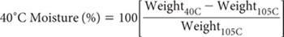
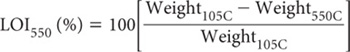
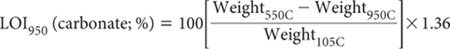

Loss-on-ignition (LOI) is a credible option when clients require approximate results for SOC and/or SOM (Davies 1974). The same applies to estimates of soil carbonate.
The methodology is particularly suited to laboratories with a restricted suite of equipment and/or because the test avoids the problem of safe disposal of dichromate-sulfuric acid solutions (Craft et al. 1991). The technology is well-established in laboratories that work with composts and manures, where LOI is used to determine ash content and by reciprocation, the OM content of these materials (Matthiessen et al. 2005). Because the method is relatively safe and inexpensive, it is widely used for diagnostic soil testing in the USA (http://www.agviselabs.com/tech_art/om.php). With few exceptions, elemental C contained in coal or charcoal or other carbonised material is also destroyed at ignition temperatures between 375–850°C (Ball 1964).
The procedure involves the ignition of soils at high temperatures, thereby combusting the OM which is lost, along with any volatile solids that may also exist. There is no universal agreement, however, on the time and temperature of ignition. For example, Nelson and Sommers (1996) recommend ignition at 400°C for 16 h, whereas the preferred combination for composting materials is 550°C for 2 h (Matthiessen et al. 2005). In the method described, the temperature (500–550°C) and time (2 h) for LOI to determine OM content derives from Heiri et al. (2001). Other steps in the procedure allow the calculation of soil moisture content at 40°C and later, an estimate of soil carbonate content following further heating to 950°C.
The method described does not account for the presence of any water of crystalisation that may still exist in some hydrated soil minerals across the temperature range 105–180°C.
Initially ‘condition’ the numbered 20 mL beakers or crucibles at 550°C for around 2 h, cool and determine the tare weight of each to 0.10 mg.
Next add to each tared container a known weight (1–3 g of air-dry soil of <0.5 mm maximum particle size; Weight40C) and heat in the laboratory drying oven at 105°C for 24 h. Cool in a desiccator over fresh anhydrous CaCl2 then determine weight of container + dry soil and subsequently the weight (g) of the oven-dry (105°C) soil by subtraction (Weight105C). Now, place the containers with the dry soils in the pre-heated (500–550°C) muffle furnace and continue the drying process. After 2 h, remove the containers + remaining soil from the muffle furnace, transfer containers carefully to the desiccator containing fresh anhydrous CaCl2 to cool, then weigh as earlier described and obtain the weight of soil by subtraction (Weight550C). If an estimate of soil carbonate content is also required, continue the process by placing the 550°C dried containers and samples in the muffle furnace set at 950°C for 2 h to evolve all the CO2 from any carbonate minerals. Remove the containers + remaining soil from the muffle furnace, cool in the desiccator containing fresh anhydrous CaCl2, then weigh as earlier described and obtain the weight of soil by subtraction (Weight950C).
Calculate the soil moisture content at 40°C from the following equation.

Calculate LOI (OM) from the following equation, noting that % OM is assumed to approximate LOI %.

Calculate LOI (carbonate) from the following equation, noting that % carbonate (oven-dry) is assumed to approximate the LOI (%) multiplied by 1.36, where the factor 1.36 accounts for CO2 = 44 g/mol and CO32– = 60 g/mol in the original sample (Bengtsson and Enell 1986).

Report as Organic Matter by LOI (% OM) on an oven-dry basis. As necessary, report the other two parameters, also on an oven-dry basis.